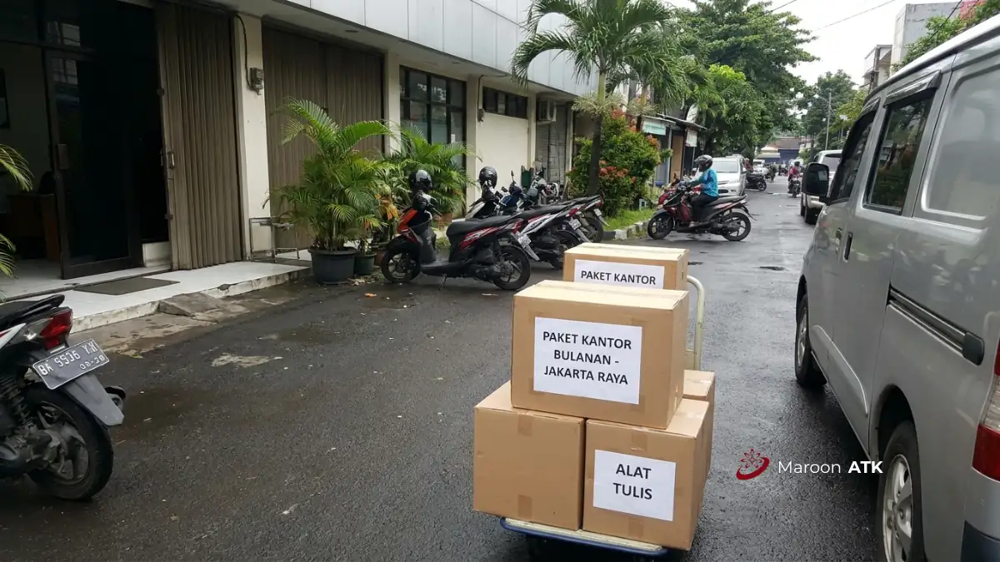

Paket pengadaan alat tulis kantor yang dilindungi dokumen Service Level Agreement (SLA) secara tertulis dan mengikat adalah solusi mutlak untuk mencegah keterlambatan pengiriman bulanan. Pastikan Anda mengunci klausul lead time pengiriman, batas akurasi pesanan minimum 99%, garansi 100% orisinalitas barang, dan klausul fixed price agreement agar operasional administrasi di kantor tidak pernah mandek akibat kehabisan stok.
Apa Itu SLA dalam Kontrak Paket Pengadaan Alat Tulis Kantor?
SLA atau Service Level Agreement dalam paket pengadaan alat tulis kantor adalah kesepakatan tertulis yang mengunci standar layanan vendor, mulai dari kecepatan pengiriman hingga penanganan komplain, agar operasional kantor tidak terganggu oleh keterlambatan barang.
Bagi tim General Affairs maupun procurement, SLA menjadi instrumen hukum dan operasional yang sangat penting karena kontrak paket pengadaan alat tulis kantor biasanya berjalan dalam jangka waktu berulang bulanan hingga tahunan. Tanpa SLA yang jelas, vendor berpotensi mengirim barang terlambat, mengganti spesifikasi barang secara sepihak dengan produk tiruan murahan, atau lambat merespons komplain retur barang rusak — yang pada akhirnya menghambat ritme kerja harian ratusan karyawan di kantor.
Klausul Apa Saja yang Wajib Ada dalam SLA Kontrak Paket Pengadaan ATK?
Klausul wajib dalam SLA kontrak paket pengadaan alat tulis kantor meliputi lead time pengiriman, akurasi pesanan, garansi keaslian barang, penanganan retur, fixed price agreement, dan termin pembayaran.
| No | Klausul SLA | Ketentuan Standar Ideal | Tujuan Utama bagi Instansi |
|---|---|---|---|
| 1 | Lead Time Pengiriman | Maksimal 24–48 jam (1–2 hari kerja) sejak PO diterbitkan untuk area Jabodetabek; vendor menggunakan armada logistik internal | Mencegah keterlambatan pengiriman yang mengganggu operasional harian kantor |
| 2 | Akurasi & Substitusi Pesanan | Order fulfillment rate minimal 99%; dilarang substitusi merek atau gramatur kertas tanpa persetujuan tertulis | Menjamin barang fisik yang diterima 100% sesuai item purchase order |
| 3 | Garansi Keaslian (Anti-Palsu) | Jaminan 100% barang orisinal pabrik; ganti rugi kerusakan printer bila terbukti akibat toner tiruan | Melindungi aset perangkat keras dan operasional perusahaan dari risiko kerusakan |
| 4 | Penanganan Retur (After-Sales) | Respons dan penggantian unit cacat produksi maksimal 1x24 jam kerja tanpa biaya tambahan | Mempercepat penyelesaian masalah tanpa perdebatan administrasi yang berlarut-larut |
| 5 | Stabilitas Harga (Fixed Price) | Harga satuan SKU dikunci tetap selama 6–12 bulan masa kontrak meski terjadi inflasi pasar | Melindungi anggaran belanja operasional (OpEx) dari lonjakan harga tak terduga |
| 6 | Termin Pembayaran (TOP) | Opsi pelunasan tagihan tempo 14 hingga 30 hari kalender setelah faktur pajak dan BAST diverifikasi | Menjaga kelancaran arus kas (cash flow) instansi dan kepatuhan audit internal |
Keenam klausul ini wajib dicantumkan secara eksplisit dalam dokumen kontrak berkekuatan hukum, bukan sekadar janji lisan sales representative, agar menjadi pegangan tegas jika terjadi wanprestasi pengiriman di kemudian hari.

Bagaimana Negosiasi SLA Paket Pengadaan ATK untuk Instansi di Jakarta?
Instansi di Jakarta perlu memastikan klausul lead time pengiriman paket pengadaan alat tulis kantor benar-benar dikunci maksimal 24 hingga 48 jam, mengingat volume kebutuhan kantor di Jakarta yang sangat tinggi serta kemacetan lalu lintas yang berpotensi memperlambat distribusi logistik.
Sebagai pusat bisnis dan kantor kementerian dengan kepadatan gedung pencakar langit tertinggi di Indonesia, kebutuhan ATK di Jakarta cenderung memiliki perputaran cepat. Tim procurement di Jakarta wajib menegosiasikan klausul armada logistik internal vendor agar pengiriman tidak bergantung pada ekspedisi pihak ketiga yang rentan tertunda.
Selain itu, karena mayoritas gedung perkantoran di kawasan Sudirman, Thamrin, dan Kuningan memberlakukan aturan loading dock yang ketat, SLA sebaiknya mencantumkan klausul koordinasi jadwal pengiriman yang diselaraskan dengan jam operasional lift barang gedung.
Bagaimana Negosiasi SLA Paket Pengadaan ATK untuk Instansi di Surabaya?
Instansi di Surabaya perlu menegosiasikan klausul akurasi pemenuhan pesanan (order fulfillment rate) secara ketat, mengingat jarak distribusi dari pusat gudang vendor yang umumnya berbasis di Jakarta dapat memengaruhi konsistensi stok paket pengadaan alat tulis kantor.
Sebagai kota metropolitan bisnis terbesar kedua di Indonesia, Surabaya memiliki kebutuhan ATK yang masif dari sektor perbankan, manufaktur, dan kantor instansi pemerintah daerah Jawa Timur. Tim procurement di Surabaya sebaiknya memastikan vendor memiliki mitra hub logistik lokal atau buffer stock di Surabaya, sehingga pesanan mendesak dapat dipenuhi dalam hitungan hari kerja tanpa risiko kehabisan barang di perjalanan lintas provinsi.
Bagaimana Negosiasi SLA Paket Pengadaan ATK untuk Instansi di Malang?
Instansi di Malang perlu memperhatikan klausul lead time yang realistis, karena posisi geografis Malang yang berjarak dari koridor pelabuhan utama memerlukan koordinasi rute pengiriman yang terencana dibanding kota-kota besar lainnya.
Kota Malang memiliki konsentrasi puluhan kampus negeri dan swasta ternama dengan siklus kebutuhan ATK yang sangat dipengaruhi oleh kalender akademik — terutama lonjakan drastis pada awal semester baru, masa ujian, dan registrasi mahasiswa baru. Oleh karena itu, tim pengadaan institusi pendidikan di Malang sebaiknya menegosiasikan klausul jadwal pengiriman berkala fleksibel menjelang periode sibuk tersebut, disertai jaminan ketersediaan stok kertas ujian dan map arsip berlogo instansi tanpa keterlambatan.
Bagaimana Negosiasi SLA Paket Pengadaan ATK untuk Instansi di Denpasar?
Instansi di Denpasar perlu memastikan klausul fixed price agreement dinegosiasikan dengan cermat, mengingat biaya distribusi penyeberangan ke wilayah Bali umumnya lebih tinggi dan berfluktuasi mengikuti tarif logistik kargo antarpulau.
Karakteristik geografis Bali sebagai wilayah kepulauan membuat biaya ekspedisi menjadi komponen sensitif dalam kontrak pengadaan. Tim procurement di Denpasar sebaiknya memastikan klausul harga tetap mengunci harga satuan netto barang selama 6 hingga 12 bulan masa kontrak berjalan, sehingga kenaikan tarif logistik laut atau udara tidak dibebankan secara sepihak kepada instansi di tengah periode kerja sama.
Bagaimana Negosiasi SLA Paket Pengadaan ATK untuk Instansi di Makassar?
Instansi di Makassar perlu menegosiasikan klausul termin pembayaran yang fleksibel (TOP 30 hari), mengingat siklus pencairan anggaran dan arus kas instansi di kawasan Indonesia Timur kerap memerlukan waktu rekonsiliasi dokumen faktur yang lebih panjang.
Sebagai pintu gerbang ekonomi dan pusat distribusi utama wilayah Sulawesi dan Indonesia Timur, Makassar memiliki kebutuhan ATK kantor yang terus bertumbuh pesat. Tim procurement di Makassar sebaiknya memastikan kontrak memuat klausul buffer stock khusus di gudang Makassar serta kemudahan penerbitan e-Faktur pajak yang sinkron dengan DJP Online untuk mempercepat kelengkapan syarat pencairan SPJ keuangan.
Bagi instansi yang ingin memahami dasar teknis pemilihan perangkat penunjang kantor lainnya, silakan simak juga artikel mengenai videotron LED indoor vs outdoor.
Sementara bagi Anda yang sedang mempertimbangkan migrasi vendor secara bertahap tanpa risiko kehabisan barang harian, tersedia pula panduan lengkap mengenai supplier ATK tanpa gangguan operasional.
MAROON ATK menyediakan lini produk alat tulis kantor berkualitas prima dengan dukungan dokumen legal lengkap, dan Anda dapat mempelajari profil perusahaan kami lebih lanjut di halaman tentang kami, serta melihat detail paket pengadaan yang tersedia.
Kesimpulan
- Kunci 6 klausul: Jangan tanda tangan kontrak sebelum klausul lead time, akurasi, keaslian, retur, fixed price, dan termin pembayaran tertulis eksplisit.
- Tentukan fulfillment rate: Wajibkan order fulfillment minimal 99% agar admin kantor tidak direpotkan oleh barang susulan yang tercecer.
- Proteksi anggaran: Terapkan fixed price agreement 6–12 bulan untuk menstabilkan pengeluaran belanja kantor terhadap inflasi.
- Sesuaikan konteks kota: Perhitungkan kondisi logistik lokal di Jakarta, Surabaya, Malang, Denpasar, maupun Makassar saat menentukan batas waktu pengiriman.
- Mitra terpercaya: MAROON ATK siap menandatangani kontrak pengadaan dengan garansi SLA ketat di seluruh Indonesia.
Pertanyaan yang Sering Diajukan (FAQ)
SLA atau Service Level Agreement adalah perjanjian yang mengunci standar layanan seperti lead time pengiriman, akurasi pesanan, dan penanganan retur antara instansi dan vendor ATK.
Lead time ideal untuk area Jabodetabek umumnya dikunci maksimal 24 hingga 48 jam sejak Purchase Order diterbitkan.
Bisa, melalui klausul fixed price agreement yang menegosiasikan harga satuan tetap selama 6 hingga 12 bulan meski terjadi fluktuasi harga pasar.

Asher Angelica
Spesialis strategi negosiasi kontrak B2B dan Service Level Agreement dengan pengalaman mendampingi ratusan divisi purchasing instansi pemerintah dan korporasi multinasional dalam mengamankan efisiensi rantai pasok perlengkapan kantor.